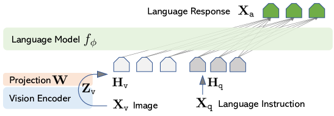

图片
多模态架构
让语言模型"看懂"图片，不是把像素直接喂进模型那么简单。当前主流的视觉语言模型（VLM）几乎都遵循一个三段式结构：视觉编码器 → 连接器 → LLM。但 2024 年起，"原生多模态预训练"路线开始挑战这套"后接式对齐"的老路。这一节拆解两条路线的分野，以及 ViT、CLIP 这两个奠基性工作如何塑造了今天的多模态格局。
一图看懂
后接式 VLM 做的事一句话：用一个预训练好的视觉编码器把图片变成向量，用一个连接器把视觉向量"翻译"成 LLM 能理解的 token，然后 LLM 照常处理。就像给一个只会读文字的人配了一副"图片转文字"的眼镜——他的大脑（LLM）没变，只是输入端多了一层转换。
- 文本输入
- 视觉编码器ViT / CLIP
- 图片
文本 token- 文本输入
- 视觉向量序列(patch embeddings)
- 视觉编码器 / ViT / CLIP
- 连接器Connector
- 视觉向量序列 / (patch embeddings)
- 视觉 token与文本 token 对齐
- 连接器 / Connector
- LLM语言模型
- 视觉 token / 与文本 token 对齐
- 文本 token
- 文本输出
- LLM / 语言模型
核心主题多模态架构
01视觉编码器
- ViT(patch 当 token)
- CLIP(图文对齐空间)
02连接器
- 线性投影
- MLP
- Q-Former/Resampler
03整合路线
- 后接式对齐
- 原生多模态
04关键权衡
- 视觉 token 数量
- 分辨率 vs 算力
ViT：把图片切成 patch 当 token
Vision Transformer（ViT） 是把 Transformer 从文本搬到视觉的关键一步。它的思路极其直接：把图片切成固定大小的 patch，每个 patch 当作一个 token，过线性投影变成向量，再喂进标准 Transformer 编码器。
具体来说，一张 $224 \times 224$ 的图片，切成 $16 \times 16$ 的 patch，得到 $14 \times 14 = 196$ 个 patch。每个 patch 展平后做线性投影（等价于一个卷积层），得到 196 个 $d$ 维向量。加上一个可学习的 [CLS] token（用于汇总全局信息），再加上位置编码，就构成了 ViT 的输入——和 BERT 的输入结构几乎一模一样。
一句话直觉
ViT 把图片"看作"一篇由 196 个"小图块"组成的"文档"，每个小图块就是一个"词"。然后用处理文档的同一套 Transformer 来处理它——视觉和文本在架构层面统一了。
ViT 的关键优势在于：和 CNN 不同，它没有卷积的局部归纳偏置，注意力可以让任意两个 patch 互相"看到"——哪怕一个在左上角、一个在右下角。代价是需要更多数据来学习这种全局关系（ViT 在大数据集上才超越 CNN），但一旦预训练充分，ViT 的表示能力通常优于同等规模的 CNN。这也是为什么今天主流 VLM 的视觉编码器几乎都是 ViT 的变体。
patch 大小直接决定视觉 token 数量——也决定了喂进 LLM 的序列长度。下面这张表给出常见配置下的 token 数：
| 图片尺寸 | patch 大小 | 网格 | 视觉 token 数 | 说明 |
|---|---|---|---|---|
| 224×224 | 16 | 14×14 | 196 | 经典 ViT-B 配置 |
| 336×336 | 14 | 24×24 | 576 | 高分辨率编码器常见 |
| 448×448 | 14 | 32×32 | 1024 | 已逼近文本上下文压力 |
| 1024×1024（分块） | 14 | 多 tile | 可达数千 | 需动态分辨率/tiling 控制 |
注意：这些视觉 token 会和文本 token 拼在一起送进 LLM，所以视觉 token 数越多，LLM 的上下文越长、注意力计算量越大。这正是 长上下文技术 在多模态场景里变得重要的原因。
把"图片切块"这一步写成代码，核心就是 unfold 滑窗 + 一次线性投影：
import torch
import torch.nn as nn
def image_to_patches(img, patch_size=16):
# img: [B, 3, H, W]；切成 (H/p, W/p) 个 patch，每个展平成向量
b, c, h, w = img.shape
patches = img.unfold(2, patch_size, patch_size).unfold(3, patch_size, patch_size)
patches = patches.permute(0, 2, 3, 1, 4, 5).contiguous()
patches = patches.view(b, -1, c * patch_size * patch_size) # [B, num_patch, 3*p*p]
return patches
proj = nn.Linear(3 * 16 * 16, 768) # 投影到 d=768
tokens = proj(image_to_patches(img)) # [B, num_patch, 768]，即可作为 Transformer 输入CLIP：让视觉和语言在同一个空间对齐
ViT 解决了"怎么用 Transformer 编码图片"的问题，但 ViT 输出的视觉向量是"视觉空间"的，和 LLM 的"语言空间"不在同一个坐标系里。CLIP（Contrastive Language-Image Pre-training） 解决的正是这个问题——让视觉编码器和文本编码器输出到同一个向量空间。
CLIP 的训练方式是对比学习：给一批"图片-文本"对，让图片编码器和文本编码器分别编码，然后计算所有图片和所有文本之间的相似度矩阵。目标是让匹配的图文对相似度高，不匹配的低。训练完成后，"一只猫的图片"和"一只猫的照片"这两个向量在空间中会很接近，而"一只猫的图片"和"一辆汽车的描述"会很远。
- 图片 A文本 A: 一只猫图片 B文本 B: 一辆车
- 视觉编码器
- 图片 A
文本编码器- 文本 A: 一只猫
视觉编码器- 图片 B
文本编码器- 文本 B: 一辆车
- 相似度矩阵对角线=正样本其余=负样本
- 视觉编码器
- 文本编码器
- 视觉编码器
- 文本编码器
- 对比损失拉近正样本、推开负样本
- 相似度矩阵 / 对角线=正样本 / 其余=负样本
CLIP 的意义不仅是训练了一个好的图像分类器——更重要的是它产出了一个视觉编码器，其输出向量和自然语言在同一空间对齐。这意味着 LLM 可以直接"读懂"CLIP 视觉编码器的输出，不需要从零学习视觉-语言的映射关系。LLaVA、Qwen-VL、InternVL 等主流 VLM 都使用 CLIP（或其变体如 SigLIP）的视觉编码器作为视觉前端。
展开：CLIP 的对比损失，以及 SigLIP 为什么把 softmax 换成 sigmoid
CLIP 的损失是典型的 InfoNCE：一个 batch 有 $B$ 个图文对，编码后得到 $B$ 个图像向量和 $B$ 个文本向量，两两算相似度得到 $B \times B$ 的矩阵。对每一行（每张图）做 softmax，把对角线那一项当作正确答案算交叉熵；对每一列（每段文本）再做一次。也就是说，每个正样本的损失都依赖同一 batch 里的所有负样本。
这带来一个很现实的工程后果：batch 越大，负样本越多，学到的空间越好。所以 CLIP 类训练普遍追求超大 batch。但 softmax 要在整个 batch 上归一化，多卡训练时必须把所有卡上的向量 all-gather 到一起才能算，通信量随卡数增长，且每张卡都要存下完整的 $B \times B$ 相似度矩阵——batch 一大就撞显存和带宽墙。
SigLIP 的改动很朴素：把 softmax 换成 sigmoid。不再问「这张图对应 batch 里哪段文本」，而是对每一个「图-文」组合独立地问「这一对是不是匹配的」，做二分类。损失变成逐元素可加，不需要全局归一化——每张卡只算自己那一块，通信和显存压力都大幅下降，小 batch 下也能训得动。这就是为什么 2023 年之后不少 VLM 把视觉前端从 CLIP 换成了 SigLIP：不是因为它「更聪明」，而是因为它更好训。
选型时的实用判断：如果你只是拿现成权重当视觉前端，CLIP 和 SigLIP 差别主要体现在具体任务分数上，需要实测；如果你要自己训一个视觉编码器，sigmoid 路线的工程门槛明显更低。
再退一步看，给 VLM 挑视觉前端时，本质上是在三条预训练路线里选：
| 预训练路线 | 监督信号来自哪里 | 输出空间的性质 | 接进 LLM 的难易 | 代表 |
|---|---|---|---|---|
| 图文对比学习 | 互联网上的图文配对 | 已与自然语言对齐 | 最容易，连接器可以很轻 | CLIP、SigLIP |
| 纯视觉自监督 | 图像自身（不同视角/遮挡的一致性） | 视觉特征强，但与语言无关 | 较难，连接器要承担更多对齐工作 | DINO 系列、MAE |
| 有监督分类预训练 | 人工标注的类别标签 | 偏向类别判别，细节信息可能被丢弃 | 一般，且受限于标签体系 | 传统 ImageNet 预训练骨干 |
这张表解释了一个常被问到的问题：为什么主流 VLM 几乎都用 CLIP 系而不是 DINO 系？因为 CLIP 的输出已经在语言空间里了，连接器只需要做维度和分布上的微调；而纯视觉自监督特征虽然在检测、分割这类任务上更强，但它和语言之间隔着一整层未对齐的鸿沟，连接器要从零学会这个映射，训练成本高得多。也有工作把两类特征拼接起来用，试图兼顾「语义对齐」和「细节保真」——代价是视觉 token 数量翻倍。
连接器：视觉和语言之间的"翻译器"
有了视觉编码器（ViT/CLIP）和 LLM，还差一个关键组件——连接器（Connector）。视觉编码器输出的向量维度和 LLM 期望的 token embedding 维度不一定一致，而且视觉向量携带着和文本 token 不同的信息结构，需要"翻译"。
线性投影
最简单：一个线性层把视觉向量映射到 LLM 的 embedding 空间。LLaVA 最初版本就是这么做——简单有效。
MLP 投影
两三层 MLP，比线性投影多一点非线性。LLaVA-1.5 等采用，效果通常优于纯线性。
Q-Former / Resampler
用一组可学习的 query 去从视觉向量中"提取"固定数量的 token。BLIP-2 的 Q-Former、Qwen-VL 的 Resampler 属于此类。
| 连接器 | 是否压缩 token 数 | 参数量 | 细节保留 | 代表模型 |
|---|---|---|---|---|
| 线性投影 | 否 | 极少（一个矩阵） | 完整 | LLaVA-1.0 |
| MLP 投影 | 否 | 小（2~3 层） | 完整 | LLaVA-1.5、Qwen-VL |
| Q-Former | 是（压到固定 query 数） | 中 | 可能丢细节 | BLIP-2、InstructBLIP |
| Resampler | 是（压到固定 token 数） | 中 | 可能丢细节 | Qwen-VL、Flamingo |
连接器的设计影响一个关键指标——视觉 token 数量。ViT 输出的 patch token 数量可能多达几百甚至上千（高分辨率图片更多），全部喂进 LLM 会大幅增加上下文长度和计算量。Q-Former / Resampler 类连接器可以把几百个视觉 token 压缩成几十个，代价是可能丢失细节信息。线性/MLP 投影不压缩 token 数量，但保留了全部视觉信息——这通常在高分辨率场景下更优，但需要配合 长上下文技术 来管理增加的 token。
连接器本身的代码往往短得让人意外——真正的复杂度在「把视觉 token 塞进文本序列的哪个位置」。下面这段展示了后接式 VLM 最核心的一步：把视觉向量投影后，替换掉输入序列里预留的图像占位符：
import torch
import torch.nn as nn
class MLPConnector(nn.Module):
"""最常见的连接器：两层 MLP，把视觉维度映射到 LLM 的 embedding 维度"""
def __init__(self, d_vision=1024, d_llm=4096):
super().__init__()
self.proj = nn.Sequential(
nn.Linear(d_vision, d_llm),
nn.GELU(),
nn.Linear(d_llm, d_llm),
)
def forward(self, vis_feats):
# vis_feats: [B, num_patch, d_vision]
return self.proj(vis_feats) # [B, num_patch, d_llm]
def build_inputs(llm, connector, vis_feats, input_ids, image_token_id):
"""把视觉 token 插进文本序列：替换掉占位符 <image> 对应的位置
关键点：LLM 收到的始终是一串 embedding，它并不知道
某些位置来自图片——这正是「后接式」能工作的原因。
"""
text_embeds = llm.get_input_embeddings()(input_ids) # [B, L, d_llm]
vis_embeds = connector(vis_feats) # [B, P, d_llm]
# 找到占位符位置，用视觉 embedding 逐个替换
mask = (input_ids == image_token_id) # [B, L]
text_embeds[mask] = vis_embeds.reshape(-1, vis_embeds.size(-1))
return text_embeds # 直接作为 inputs_embeds 喂给 LLM注意最后那句注释：LLM 完全不知道哪些 embedding 来自图片。它只是在处理一串向量，视觉信息之所以能被理解，靠的是连接器把它们投影到了「看起来像文本 embedding」的位置上。这也解释了为什么阶段一的连接器对齐训练如此关键——一旦这层翻译没训好，视觉 token 对 LLM 来说就是噪声。
展开：高分辨率与动态分辨率（Dynamic Resolution / Tiling）
原生 ViT 把整张图切成固定 patch，token 数由分辨率平方决定。一张 1024×1024 的图按 patch 14 切出约 $(1024/14)^2 \approx 5300$ 个 token——直接灌进 LLM 既撑爆上下文、又让注意力计算量爆炸。于是高分辨率 VLM 普遍采用切 tile 策略：把大图按固定大小的块（如 336×336）切成若干 tile，每个 tile 独立过 ViT 得到一组 patch token，再把所有 tile 的 token 拼成一个长序列；同时保留一个"缩略整图"tile 以维持全局布局。
更进一步是动态分辨率：不再固定 tile 数，而是根据图片原始宽高比和分辨率，选择最合适的 tile 排布（例如宽图用 1×2、方图用 2×2），让 token 数随内容自适应，而非一律拉满。Qwen2-VL 还用 MRoPE（多模态 RoPE） 给每个视觉 token 标注它在原图中的二维/时间坐标，弥补"切块打乱空间关系"的损失。无论哪种方案，切得越细 token 越多，最终都要落到 长上下文技术 和 注意力变体 上去解决显存与算力——这是多模态模型"看清楚"和"算得动"之间的核心权衡。
实现上的坑：切块后必须补回空间位置信息（否则模型不知道哪块在哪个位置）；tile 之间最好不要共享位置编码而要区分边界；动态分辨率的 tile 数要设上限，否则极端长宽比图片仍会撑爆上下文。
后接式对齐：主流 VLM 的标准路线
把以上三个组件拼起来，就是当前大多数 VLM 的标准架构：预训练 ViT/CLIP 视觉编码器 + 连接器 + 预训练 LLM。这条路线最经典的原图来自提出 LLaVA 的论文《Visual Instruction Tuning》——它把「视觉编码器 → 连接器 → LLM」三段式画成了教科书级的图。训练时通常分阶段进行：

这张图值得逐块读，因为整页的架构知识都能从图里「反推」出来。图从左到右有四段：① 最左边是输入图片，被切成网格状的 patch——一个 patch 就是前面 ViT 讲的「一个 token」；② 中间是 CLIP 视觉编码器，它输出一串视觉特征向量，图上把它们画成「视觉 token」（图里最长的那个词条）；③ 是投影矩阵 W——这是 LLaVA 最初的连接器，只有一个线性层，把视觉 token 的维度映射成 LLM 的 embedding 维度；④ 最右边是 LLM，它同时接收「视觉 token」和「语言 token」（图上把 X_v、H_q 画成两路输入），自回归地生成回答。
这张图最革命性的一点是「连接器只是一层 W」——在它之前，Flamingo 用门控交叉注意力、BLIP-2 用 Q-Former 来桥接视觉和语言，都复杂得多；LLaVA 证明只要视觉编码器已经和语言对齐（CLIP 做到了），一个线性层 + 高质量的视觉指令数据就够用。图上没有画出而正文里明确的关键事实是：LLaVA 最初用 CLIP 视觉编码器（冻结）+ 一个随机初始化的线性投影 W，配合 GPT-4 生成的视觉指令数据做指令微调，就达到了「相对 GPT-4 85.1%」的合成指令跟随分数。
- 阶段一：连接器对齐训练。冻结视觉编码器和 LLM，只训练连接器。用图文对数据让连接器学会把视觉向量翻译成 LLM 能理解的 token。
- 阶段二：指令微调。解冻 LLM（或部分解冻），用视觉指令数据（如"看图回答问题"）训练整个系统，让模型学会遵循多模态指令。
这两个阶段的关键差异不在数据，而在谁被冻结。冻结策略选错是新手训 VLM 最常见的翻车点：阶段一就解冻 LLM，会让还没对齐好的视觉噪声直接污染语言能力，表现为「图倒是看了，中文说得却退步了」——这正是多模态版本的灾难性遗忘。
| 阶段 | 视觉编码器 | 连接器 | LLM | 数据类型 | 目的 |
|---|---|---|---|---|---|
| 阶段一：对齐 | 冻结 | 训练 | 冻结 | 大量图文描述对（caption） | 只教连接器「怎么把视觉向量翻译成 LLM 听得懂的话」 |
| 阶段二：指令微调 | 冻结或小学习率 | 训练 | 训练（全参或 LoRA） | 视觉问答、图文推理、OCR 等指令数据 | 教模型遵循多模态指令，形成可用的对话能力 |
| 可选：视觉端解冻 | 小学习率微调 | 训练 | 训练 | 高分辨率、细粒度任务数据 | 提升 OCR、图表、细节识别，但风险最高、最容易掉通用能力 |
实践经验：阶段一宁可训久一点，它便宜（只有连接器有梯度）且直接决定上限；阶段二如果显存吃紧，用 LoRA 只微调 LLM 的注意力投影层通常就够，全参微调的收益未必抵得上它带来的遗忘风险。视觉编码器要不要解冻是个见仁见智的问题：解冻能显著提升 OCR 和细粒度识别，但也最容易把 CLIP 好不容易学到的对齐空间搞坏，建议只在有充足数据和评测集时才动。
把"一张图如何流过后接式 VLM 并产出回答"画成时序图，能看清连接器在哪一步起作用：
sequenceDiagram
participant I as 输入图片
participant V as ViT/CLIP 编码器
participant C as 连接器
participant L as LLM
participant O as 文本输出
I->>V: 编码成 patch 向量序列
V->>C: 视觉向量（视觉空间）
C->>C: 线性/MLP/Q-Former 翻译
C->>L: 视觉 token（对齐语言空间）
L->>L: 与文本 token 一起做注意力
L->>O: 自回归生成回答
这条路线的优势是工程友好——视觉编码器和 LLM 各自预训练好后拼接，不需要从头联合训练。可以复用已有的强大 LLM（如 LLaMA、Qwen），多模态能力通过连接器"嫁接"上去。LLaVA、Qwen-VL、InternVL、GPT-4V 的公开部分都采用了这条路线的变体。
后接式的天花板
后接式对齐的 LLM 在预训练时只见过文本，它的内部表示空间是"纯语言"的。视觉信息通过连接器翻译后"挤进"这个语言空间，但 LLM 的底层能力（如推理、生成）始终是以语言为中心训练的。这意味着模型擅长"用语言描述图片"，但在需要深度跨模态推理的任务上（如看图做数学题、理解空间关系）可能有天花板。
原生多模态预训练：从第一天就混合模态
原生多模态预训练（Native Multimodal Pre-training） 是 2024 年开始兴起的不同路线。核心区别是：不先训练纯文本 LLM 再接视觉，而是从一开始预训练就把视觉和文本数据混合在一起，让模型的内部表示从底层就同时容纳两种模态。
- 阶段 1: 纯文本预训练训练 LLM从头预训练视觉 + 文本混合数据
- 阶段 2: 接入视觉编码器训练连接器
- 阶段 1: 纯文本预训练 / 训练 LLM
统一 token 空间视觉和文本同等对待- 从头预训练 / 视觉 + 文本混合数据
- 阶段 3: 多模态指令微调
- 阶段 2: 接入视觉编码器 / 训练连接器
多模态指令微调- 统一 token 空间 / 视觉和文本同等对待
- 输出: LLM 核心 + 视觉外挂
- 阶段 3: 多模态指令微调
输出: 原生多模态模型- 多模态指令微调
原生路线的关键特征：
- 统一的 token 空间：视觉 patch token 和文本 token 从预训练第一步就进入同一个 Transformer，共享同一套 embedding 空间和注意力机制。没有"翻译"步骤。
- 混合数据课程：预训练数据里同时包含纯文本、图文交错、纯图片等多种形式。模型从底层学会在同一个表示空间里处理所有模态。
- 模态融合更深入：不是"看图+读字"的拼接，而是视觉和语言信息在每一层注意力中都自由交互。跨模态推理能力理论上更强。
| 维度 | 后接式对齐 | 原生多模态预训练 |
|---|---|---|
| LLM 预训练 | 纯文本，视觉后接入 | 从头就混合视觉+文本 |
| 视觉信息路径 | 编码器 → 连接器 → LLM（翻译后进入） | patch token 直接进入（无翻译层） |
| 跨模态推理 | 受限于 LLM 的语言中心表示 | 底层表示即多模态，理论上更强 |
| 工程成本 | 低（复用已有 LLM） | 高（需从头联合训练） |
| 数据需求 | 连接器对齐数据量小 | 大量高质量多模态预训练数据 |
| 代表模型 | LLaVA、Qwen-VL、InternVL | GPT-4o、Gemini、Qwen2-VL（部分） |
2026 年的趋势判断
原生多模态是明确方向——顶级模型（GPT-4o、Gemini）都在走这条路。但它对数据和算力的要求远高于后接式，短期内后接式仍是开源社区的主流（因为可以在已有 LLM 上"嫁接"）。分水岭在于：如果你的 LLM 已经很强、只想加视觉能力，后接式够用且便宜；如果你从零训练一个模型、目标是多模态原生能力，走原生路线。
一条时间线看清这套架构是怎么长出来的
今天这套「视觉编码器 + 连接器 + LLM」的结构不是设计出来的，是一步步长出来的。理解每一步解决了什么问题，比记住结构本身更有用：
timeline
title 多模态架构的演进主线
ViT 时代 : 图片切 patch 当 token
: 视觉与文本在架构上统一
CLIP 时代 : 图文对比学习
: 视觉输出落到语言空间
桥接期 : Flamingo 用交叉注意力接入冻结 LLM
: BLIP-2 用 Q-Former 压缩视觉 token
LLaVA 时代 : 一个线性层就够
: 视觉指令微调数据成为关键
高分辨率期 : 动态分辨率与 tiling
: 多模态位置编码补回空间信息
原生多模态 : 预训练第一天就混合模态
: 视觉与文本共享同一表示空间
值得注意的是「桥接期」到「LLaVA 时代」的这次简化。Flamingo 用的是门控交叉注意力——在 LLM 的若干层里插入专门的交叉注意力模块去「看」视觉特征；BLIP-2 用的是 Q-Former，一个专门训练的小 Transformer。两者都不便宜。而 LLaVA 证明了一件事：只要视觉编码器已经和语言对齐得足够好（CLIP 做到了），一个线性层加上高质量的视觉指令数据就够了。这个「够用就好」的发现，是后接式路线能在开源社区迅速铺开的直接原因。
新手最容易搞错
视觉 token 不是「把图片压缩成一个向量」，而是一张图可能产生上百个 token——每个 patch 一个。新手最容易犯的错是把 VLM 想成「LLM 加一个图像分类器」：图像分类器输出的是一个标签/向量，而 VLM 输入 LLM 的是一整串视觉 token，它们和文本 token 拼在同一个序列里，共享同一个上下文窗口和注意力计算。所以「放一张 1024×1024 的图」对 LLM 来说等于「瞬间灌进几千个 token」——上下文预算被视觉 token 吃掉大半。理解了这一点，就理解了为什么高分辨率多模态模型必须做 tiling 和动态分辨率、为什么 长上下文技术 在多模态场景里格外重要。
常见失效模式：VLM 会在哪些地方翻车
把 VLM 接上线之后，最有价值的知识不是「它能做什么」，而是「它会在哪儿出错、错的时候长什么样」。下面这几类失效模式几乎每个做过多模态应用的人都会撞上，而且大多数都能从前面讲过的架构原理里找到解释。
| 失效模式 | 典型表现 | 架构层面的原因 | 缓解方向 |
|---|---|---|---|
| 小字 / OCR 失败 | 看不清票据、表格、界面上的小号文字 | patch 粒度太粗，一个 16×16 的 patch 里塞了好几个字符 | 提高输入分辨率、启用动态分辨率与 tiling、用 OCR 数据微调 |
| 物体幻觉 | 描述里出现图中根本不存在的东西 | LLM 的语言先验太强，「厨房场景通常有冰箱」压过了实际视觉证据 | 加入负样本与「图中没有」类训练数据、提示词要求逐项核对 |
| 空间关系错乱 | 左右、上下、前后判断出错 | patch 序列化打散了二维空间结构，普通一维位置编码补不回来 | 使用多模态位置编码（如二维/时间维 RoPE）、增加空间关系训练数据 |
| 计数不准 | 「图里有几个人」经常数错，尤其超过五六个时 | 注意力做的是加权汇总，本质上不擅长精确计数这种离散累加 | 拆解任务（先定位再计数）、外接检测工具、降低对精确计数的依赖 |
| 多图混淆 | 输入多张图时，把 A 图的内容说成 B 图的 | 多张图的视觉 token 拼在同一序列里，缺乏清晰的图片边界标记 | 显式加入「第 1 张图 / 第 2 张图」的文本分隔标记、限制单次输入图数 |
| 上下文被视觉 token 挤爆 | 高分辨率图输入后，可用的文本上下文骤减甚至报错 | 视觉 token 数随分辨率平方增长，与文本共享同一个上下文预算 | 限制 tile 数上限、用压缩型连接器、参考 上下文工程 做预算分配 |
最容易误判的一条
物体幻觉常被当成「模型不够聪明」，其实它多半是视觉信号被语言先验压过去了。一个判断方法：把同一张图配上不同的提问方式，如果问「图里有冰箱吗」会答「有」、但问「请逐个列出你实际看到的电器」时反而不提冰箱，那就基本可以确认是语言先验在作祟，而不是视觉编码器没看见。这类问题靠加分辨率是治不好的，得从训练数据和提示词两端下手。相关的通用讨论见 幻觉与事实性。
训练目标与预训练目标的关联
多模态模型的训练目标和纯文本 LLM 有继承也有变化。后接式 VLM 的阶段一（连接器训练）通常用图文对比或图文匹配损失；阶段二（指令微调）则用标准的下一个 token 预测（CLM）目标——和纯文本 LLM 一样，只是输入多了视觉 token。原生多模态路线的预训练目标也是以 CLM 为核心，只是序列里混合了视觉和文本 token。
更深入的理解预训练目标的设计——CLM、MLM、MTP 等不同目标的取舍——见 预训练目标。多模态训练本质上是在这些目标的基础上扩展了输入模态，核心的"预测下一个 token"范式并没有变。
要点速查
- 三段式架构：视觉编码器（ViT/CLIP）→ 连接器（线性/MLP/Q-Former）→ LLM。当前主流 VLM 的标准结构。
- ViT：把图片切成 patch 当 token，用标准 Transformer 编码。视觉版 BERT。
- CLIP：对比学习让视觉和文本对齐到同一向量空间。CLIP 视觉编码器是大多数 VLM 的视觉前端。
- 连接器：把视觉向量翻译成 LLM 可理解的 token。线性投影最简单，Q-Former 可压缩 token 数量。
- 两条路线：后接式对齐（先训 LLM 再接视觉，工程友好）vs 原生多模态预训练（从头混合训练，跨模态推理更强）。
- 常见坑：视觉 token 过多撑爆上下文；连接器训练不充分导致视觉信息"翻译"失败；高分辨率图片的 patch 数量爆炸需要分块处理或动态分辨率。
参考文献与延伸阅读
- An Image is Worth 16x16 Words: Transformers for Image Recognition at Scale — ViT 原始论文，把图片切成 patch 用 Transformer 编码 · arXiv:2010.11929
- Learning Transferable Visual Models From Natural Language Supervision — CLIP 原始论文，对比学习对齐视觉和语言 · arXiv:2103.00020
- Visual Instruction Tuning — LLaVA 论文，后接式 VLM 的代表性工作，用线性连接器嫁接视觉到 LLM · arXiv:2304.08485
- BLIP-2: Bootstrapping Language-Image Pre-training with Frozen Image Encoders and Large Language Models — 用 Q-Former 桥接冻结视觉编码器与 LLM 的代表作 · arXiv:2301.12597
- Sigmoid Loss for Language Image Pre-training — SigLIP，把 CLIP 的 softmax 对比损失换成逐元素 sigmoid，显著降低训练工程门槛 · arXiv:2303.15343
- Flamingo: a Visual Language Model for Few-Shot Learning — 门控交叉注意力桥接视觉与冻结 LLM 的开创性工作 · arXiv:2204.14198
- Qwen2-VL: Enhancing Vision-Language Model's Perception of the World at Any Resolution — 动态分辨率与 MRoPE 的工业实现参考 · arXiv:2409.12191
- Hugging Face 多模态文档 — transformers 中 VLM 组件的官方说明 · huggingface.co/docs/transformers
接下来
多模态架构的核心是"视觉信息怎么进入 LLM"，而 LLM 内部的训练目标设计见 预训练目标。如果想看多模态能力在应用层的落地，RAG 可以扩展到多模态检索，Computer Use 则是视觉理解在 GUI 交互中的直接应用。
权威延伸资料
围绕“多模态架构”继续深入
本章关注 Transformer 之后的架构选择：稀疏专家、线性/状态空间模型、长上下文、多模态和扩散语言模型。重点是理解每种方法改变了哪一层约束。
阅读提示：比较新架构时同时看训练目标、权重兼容性、推理状态和硬件实现；只看理论复杂度很容易得出错误结论。
- Switch Transformers: Scaling to Trillion Parameter Models ↗
MoE 路由、容量因子和负载均衡的经典介绍，适合建立稀疏激活的共同语言。
- Mamba: Linear-Time Sequence Modeling with Selective State Spaces ↗
选择性状态空间模型的代表作，解释线性扫描、选择机制和长序列效率之间的关系。
- GQA: Training Generalized Multi-Query Transformer Models ↗
用较少 KV 头降低推理带宽和缓存开销，是理解 MQA/GQA 工程取舍的直接来源。
- An Image is Worth 16x16 Words ↗
ViT 将图像 patch 化并交给 Transformer，帮助理解多模态视觉编码器的基本范式。
- Large Language Diffusion Models ↗
以 LLaDA 为代表的扩散语言模型工作，适合和自回归模型对照并识别当前研究边界。
资料优先选用原始论文、官方文档、大学课程和公共机构材料；链接按 2026-08-10 检索，具体版本以来源页面为准。
主题级技术深化
围绕“多模态架构”继续深入
发展脉络
ViT/CLIP 将视觉表示接入语言模型，BLIP-2、Flamingo 和统一多模态模型逐步把图像、视频、音频纳入同一上下文。
机制抓手
视觉编码器输出 patch/token，connector 做投影或查询抽取，LLM 再以交叉注意力或前缀 token 消费；对齐数据与分辨率决定瓶颈。
工程权衡
更高分辨率提升细节却增加视觉 token 和 KV 成本；冻结视觉塔稳定训练，但会限制领域适配。
前沿观察
视频长时序、OCR/grounding、视觉工具调用和统一生成仍是活跃方向，评测需拆分感知、定位和推理。
实践检查画出 image -> encoder -> connector -> LLM 的张量形状，并设计一个区分看错、读错和推理错的评测集。